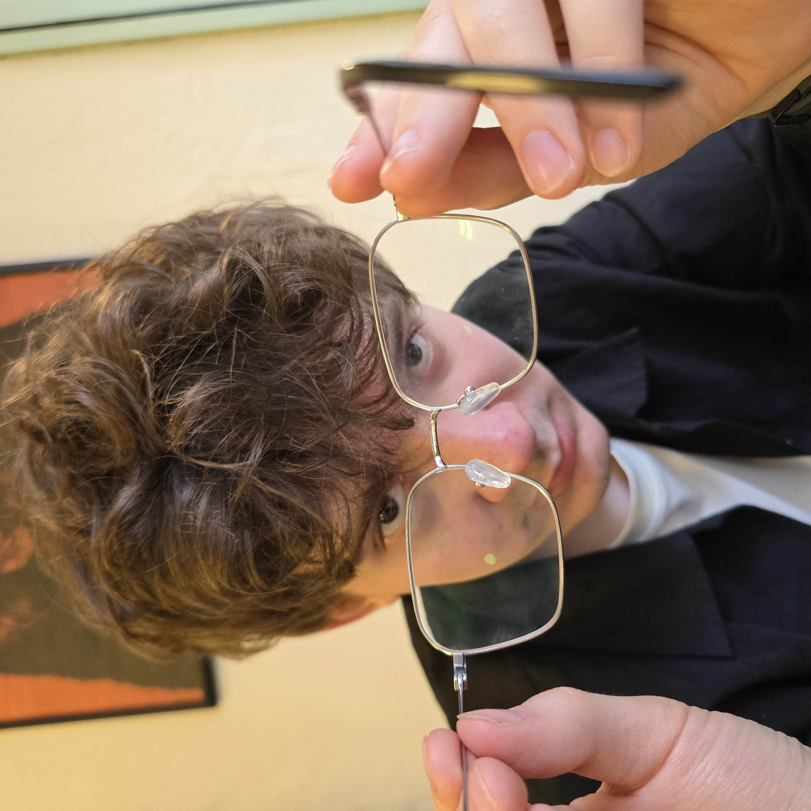
Computational Biologist | Data Scientist
I'm a computational structural biology PhD student at the University of Basel. I have academic and industry experience in Python, R, machine learning, and statistics applied to omics, protein sequence, and cryo-EM data.
I'm currently developing and leveraging deep learning methods at the intersection of computational structural biology and cryo-ET. I have also taught statistics and ML to biology and medicine students.
My main goal is to continue developing AI tools applied to complex biological problems.
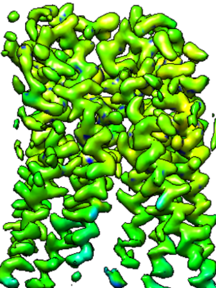
September 2022
Created CLI tool as well as a web application for cryo-EM maps resolution estimation using deep learning.
This tool is based on 3D-UNet model architecture. Classic UNet is commonly used for image segmentation tasks and it is essentially a classification, but in this case, I used this model for regression.
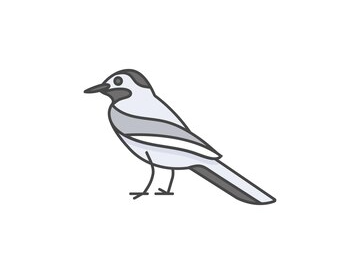
October 2022
This is a Python Django-based personal portfolio website.
The website uses Wagtail CMS. Wagtail is a Django Content Management System.
All content: personal information, portfolio projects, social media links, etc. can be adjusted in Wagtail admin.
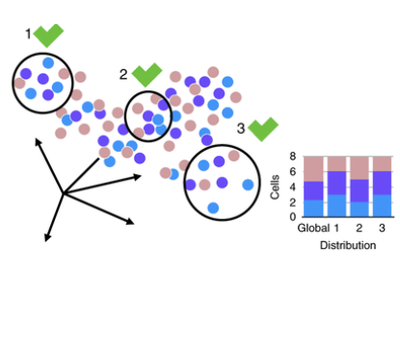
June 2021
The goal of this project is to tackle the complexity of data analysis by identifying the best approaches. The single-cell transcriptomics analysis has multiple steps, but we have focused on data integration — a crucial step when working with clinical data coming from patients.
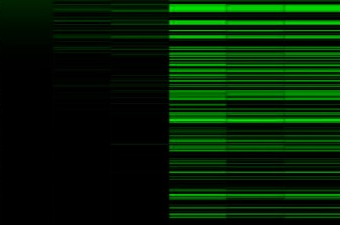
February 2021
This project aims to study differential genes expression of 19 sportsmen during physical and psychological stress before and after running in extreme highlands conditions (2450-3450 m, Elbrus m.) and also in the "start" point before arrival at the competition (St. Petersburg).
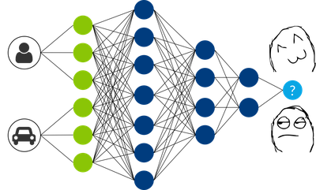
October 2022
Content-based recommender system API based on the text of the post and user data.
Developed models based on text features obtained with TF-IDF, BERT, RoBERTa, and DistilBERT.
Created an A/B testing system to compare models using the hit rate metric.
Python: Pandas, Matplotlib, Seaborn, Scikit-learn, PyTorch, PyTorch Lightning, FastAPI, Django
R: ggplot2, Seurat, DeSeq2, dplyr
Classical ML: Linear models, CatBoost, LightGBM, XGBoost, Optuna, Boruta, SHAP
Deep Learning: Image Segmentation, Detection, Transformers, Graph Neural Networks, Generative models (GAN, VAE, diffusion, flow-matching), TabNet
Hypothesis testing, ANOVA, Survival analysis, Causal inference (Instrumental variables, Regression discontinuity)
Linux, Bash, Git, GitHub, Bitbucket, Docker, Kubernetes, Airflow, Jira, SQLite
English - Full professional proficiency
Russian - Native
Thesis: "High-throughput protein complex identification in cryo-ET data using deep learning and XL/MS"
Thesis: "Structural analysis of the Acinetobacter baumannii bacteriophage TaPaz using cryo-EM and deep learning"
Thesis: "A new strain of the carotenogenic microalga Bracteacoccus aggregatus Tereg and its biotechnological characteristics"
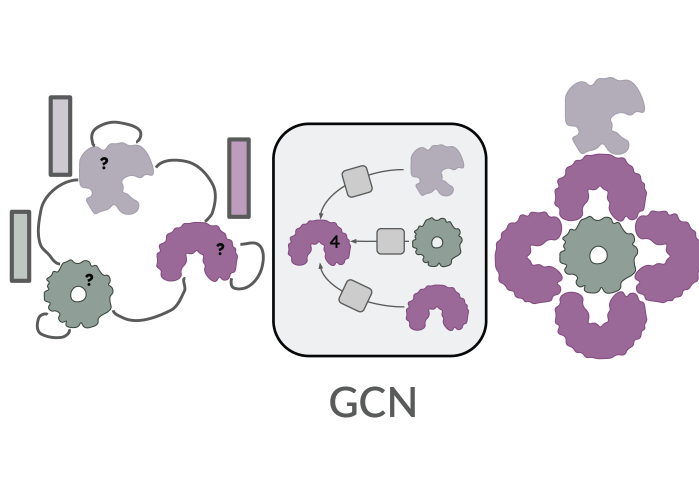
Stoic: Fast and accurate stoichiometry prediction
MLSB @ NeurIPS, 2025
Stoic establishes the new state-of-the-art in protein complex stoichiometry prediction. Residue-level protein language model embeddings are pooled with self-attention and interface-specific auxiliary losses, and further improved with protein-level graph context.
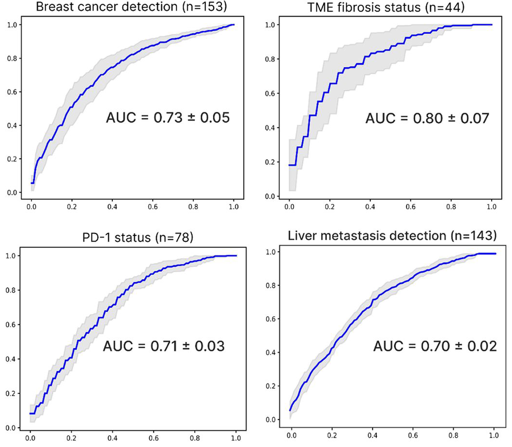
Comprehensive machine learning-driven platform infers key tumor characteristics from blood-derived cfRNA
SITC, 2024
ML models trained on synthetic cfRNA transcriptomes accurately inferred tumor-specific features and cancer states for breast, colorectal, lung, and pancreatic cancers from tumor-derived cfRNA.
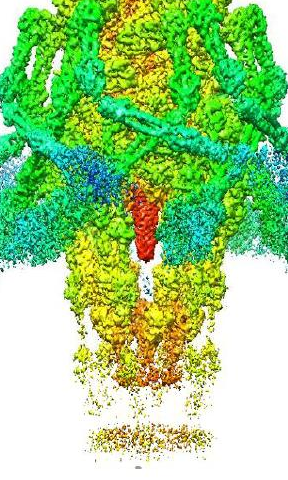
Structure of A. baumannii Phage Tapaz, Revealed with Cryo-Electron Microscopy
IJBM, 2021
We successfully obtained the near-atomic resolution structural map of phage TaPaz. The data obtained contribute to enhancing knowledge of structural diversity of bacterial viruses infecting A. baumannii.
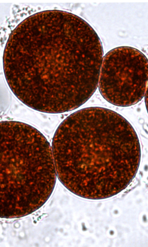
Combined Production of Astaxanthin and Carotene in a New Strain of the Microalga Bracteacoccus aggregatus BM5/15
Biology, 2021
Bracteacoccus aggregatus BM5/15 co-produces high levels of beta-carotene and astaxanthin and grows well in photobioreactors, making it a strong industrial carotenoid candidate.
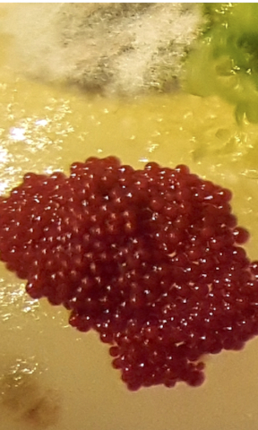
Diversity of Carotenogenic Microalgae in the White Sea Polar Region
FEMS Microbiology Ecology, 2020
White Sea samples yielded Haematococcus lacustris, H. rubicundus, Coelastrella aeroterrestrica, and Bracteacoccus aggregatus - three reported in polar regions for the first time. Their stress tolerance makes them promising natural pigment sources.
2025
Organized a workshop as part of the Machine Learning in Life Sciences Summer School, Belgium.
2023
Awarded by the University of Basel.
December 2025 - Copenhagen, Denmark
Poster: "Stoic: Fast and accurate protein stoichiometry prediction."
September 2025 - Basel, Switzerland
Poster: "Enhancing PPI prediction and interpretability with deep learning."
March 2025 - Barcelona, Spain
Poster: "High-throughput protein complex identification in cryo-ET data using deep learning and XL/MS."
April 2023 - Orlando, USA
Poster: "Computational cancer cell gene expression deconvolution from tumor bulk RNA-seq via Helenus."
Feel free to reach out via email or connect with me on LinkedIn.
© 2022. Designed and developed by Daniil Litvinov